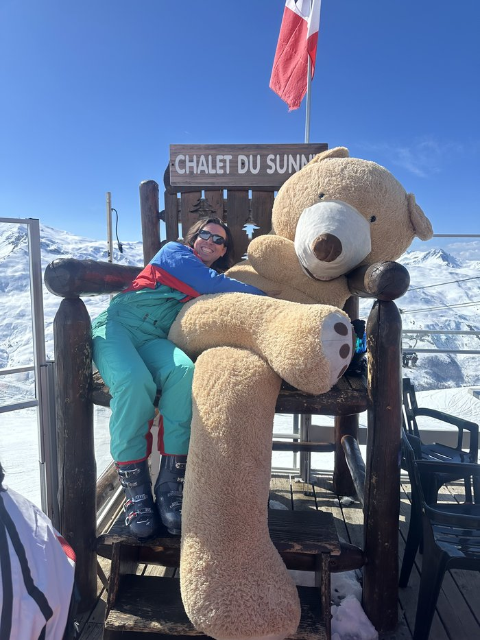

Sam Bysh

I'm a philosophy PhD student at the University of Illinois Chicago, focussing on the philosophy of physics and working under the supervision of Nick Huggett. My dissertation research focusses on virtual particles in quantum field theory. Some previous work focussed on the philosophy of spacetime and quantum gravity. See my research page for more. Before moving Chicago, I was born, raised and educated in London, studying Physics and Philosophy at King's College London followed by a Master's in theoretical physics at Imperial College London.
Outside philosophy, I'm an enthusiast of Iyengar yoga and a classically trained pianist who used to get paid to sing. I cycle daily, having once ridden from the coast of Holland to Budapest via Berlin, and play squash, having grown up playing rugby, tennis and basketball.